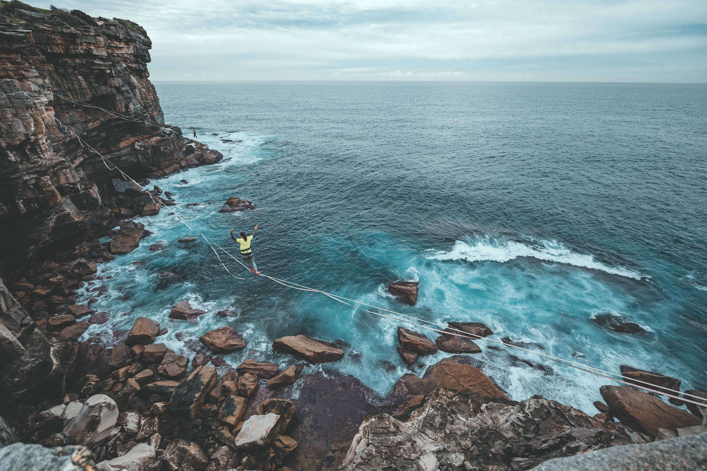
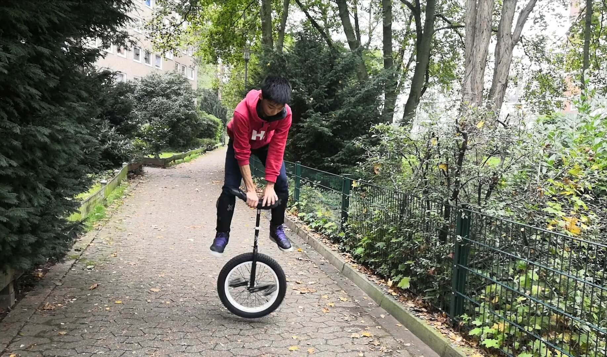

Was macht man?
Beim Einradfahren fährt man nicht wirklich nur rum, man macht auch Tricks. Leider ist das Fahren das, woran viele denken, wenn man sagt, man fahre Einrad, nicht das Tricks machen.
Beim Einradfahren fährt man nicht wirklich nur rum, man macht auch Tricks. Leider ist das Fahren das, woran viele denken, wenn man sagt, man fahre Einrad, nicht das Tricks machen.
Bevor ich anfange, möchte ich erläutern, dass ich kein Einrad Profi bin. Ich fahre erst seit 2 Jahren und habe bestimmt noch nicht alles erfahren. Deshalb bitte ich um Verständnis, falls ich Fehler mache.
Zunächst einmal: Es gibt viele Einrad-Sportarten: Flatland, Trial, Street etc. Und die werde ich euch im Folgenden erklären (so gut wie möglich).
Beim Flatland geht es darum, Tricks ohne Rampen und weiteres (nur mit einem flachen Boden) zu schaffen. Diese Tricks werden wiederum in weitere Bereiche eingeteilt. Diese Bereiche sind Rolls, Spins und Flips.
Bei den Rolls rolls du mit deinem Einrad. Das tust du, indem du dein Körper mit deinem einen Fuß auf dem Einrad balancierst (Kurbeln, Reifen, etc.) und das Einrad mit dem anderen Fuß an dem Reifen, Kurbeln, wie auch immer schiebst.
Bei den Spins geht es darum, von deinem Einrad abzuspringen, den Einrad zu drehen (90°, 180°, 270° usw.) und wieder auf den Pedalen zu landen. Das ist leichter gesagt als getan und meistens eigentlich Kopfsache.
Bei den Flips bringst du deine Pedalen dazu, sich in der Luft zu drehen, indem du abspringst, die Pedalen mit den Füßen drehst (360°, 720°, 1080°, usw.), und dann landest. Wie bei den Spins kann diese Aufgabe einfach erscheinen, aber sobald man es ausprobiert, ist es nicht so.

Bei Trial geht es darum, sich mit dem Einrad über Hindernisse zu manövrieren, ohne den Boden zu berühren.
Hierbei wird es viele große Sprünge geben, daher ist Trial auch meiner Meinung nach am gefährlichsten und nichts für Anfänger. Beim Trial macht man eigentlich keine Tricks. Wie man sieht, weiß ich eher weniger von Trial. Bis jetzt mache ich erst Baby-Fortschritte in Trial ;)

Street zu fahren ist eine Mischung aus Trial und Flatland. Man geht auf der Straße und probiert selber Hindernisse (Geländer, Bänke etc.) zu finden. Man fährt dann um oder auf diese Hindernisse und probiert so viele Tricks zu machen sowieso stylisch auszusehen wie möglich.
Street ist auch wesentlich gefährlicher als Flatland, weil es viel mehr Treppen usw. gibt, die dich verletzen könnten.
Zum Schluss kommen zu der Art von Einradfahren, die von vielen erwartet ist, wenn man sagt, man fahre Einrad. Das ist Freestyle.
Diese Einrad-Sportart ähnelt dem Theater. Klar, man kennt ein paar Tricks, jedoch sind keine von den so Gefährlich wie Flatland.
Es geht weniger darum, wie schwer die Tricks sind, die man vorführt, sondern mehr darum, wie und wie gut du alles vorgeführt hast, und ob die Musik und die Stimmung sowie die Geschichte, die gezeigt wird, wirklich interessant sind (wie bei einem Theaterstück).
Hoffentlich habt ihr jetzt verstanden, dass das Einradfahren keinesfalls mädchenhaft oder komisch ist.
Vielleicht könnt ihr sogar nachvollziehen, warum manche das Einradfahren so interessant finden.